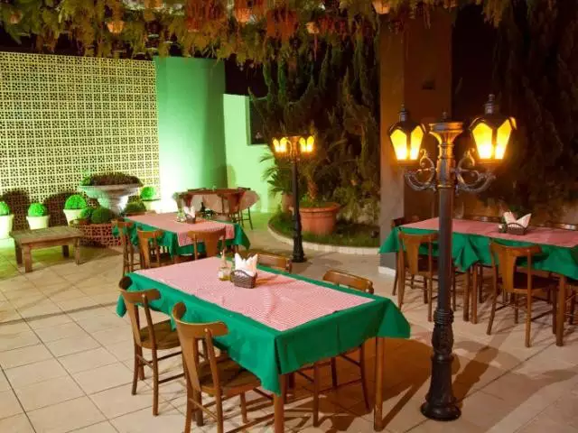

Sobre Nós

Bem-vindo à nossa autêntica pizzaria italiana, onde tradição e alegria se encontram em cada pedaço de pizza.
No coração da nossa cozinha, ingredientes frescos e receitas familiares se unem para criar uma experiência gastronômica que cativa o paladar de um público diversificado.
Em nosso ambiente descontraído, sorrisos são contagiosos, e a felicidade está no ar.
Venha se juntar a nós para desfrutar de uma fatia da Itália, com um toque de alegria e uma pitada de tradição, que fazem da nossa pizzaria um lugar verdadeiramente especial.
Em nossa pizzaria italiana, tradição é a palavra de ordem.
Nossas receitas, passadas de geração em geração, preservam o sabor autêntico da Itália em cada mordida. Mas não se engane, a tradição aqui é complementada por uma alegria contagiante.
O som das risadas ecoa em nosso espaço acolhedor, onde famílias se reúnem, amigos brindam e novas amizades florescem.
Nosso público é tão diverso quanto as opções do nosso cardápio.
Atraímos amantes da pizza de todas as idades e origens, criando uma atmosfera onde todos se sentem bem-vindos.
Seja para uma noite romântica, uma comemoração especial ou uma refeição casual, nossa pizzaria é o lugar perfeito para celebrar a vida e compartilhar momentos felizes.
Junte-se a nós e descubra o segredo por trás da nossa tradição italiana com um toque de alegria.
Cardápio
Tamanho das pizzas
Pizza P: R$ 20,00
M: R$ 35,00
Pizza G: R$ 50,00
Pizza F: R$ 70,00

Pizza de Margherita
A pizza Margherita é uma das mais icônicas e clássicas, com ingredientes que representam as cores da bandeira italiana.
A base é feita com molho de tomate, queijo mozzarella fresco, folhas de manjericão fresco e um fio de azeite de oliva extra virgem.
Pizza de Pepperoni
A pizza Pepperoni é um sucesso nos Estados Unidos e em todo o mundo.
Ela apresenta uma base de molho de tomate coberta com queijo mozzarella derretido e generosas fatias de pepperoni, um salame levemente apimentado.

Pizza de Quatro Queijos
A pizza Quatro Queijos é uma escolha indulgente para os amantes de queijo.
Ela possui uma base de molho de tomate coberta com uma mistura de quatro queijos geralmente mozzarella, gorgonzola, parmesão e provolone.
Pizza de Portuguesa
A pizza Portuguesa é uma favorita no Brasil, inspirada na culinária de Portugal.
Ela apresenta uma base de molho de tomate coberta com queijo mozzarella, presunto, cebola, ovos cozidos, azeitonas verdes e, às vezes, fatias finas de pimentão.
Pizza de Margherita
A pizza Margherita é uma das mais icônicas e clássicas, com ingredientes que representam as cores da bandeira italiana.
A base é feita com molho de tomate, queijo mozzarella fresco, folhas de manjericão fresco e um fio de azeite de oliva extra virgem.
Pizza de Pepperoni
A pizza Pepperoni é um sucesso nos Estados Unidos e em todo o mundo.
Ela apresenta uma base de molho de tomate coberta com queijo mozzarella derretido e generosas fatias de pepperoni, um salame levemente apimentado.
Pizza de Quatro Queijos
A pizza Quatro Queijos é uma escolha indulgente para os amantes de queijo.
Ela possui uma base de molho de tomate coberta com uma mistura de quatro queijos geralmente mozzarella, gorgonzola, parmesão e provolone.
Pizza Portuguesa
A pizza Portuguesa é uma favorita no Brasil, inspirada na culinária de Portugal.
Ela apresenta uma base de molho de tomate coberta com queijo mozzarella, presunto, cebola, ovos cozidos, azeitonas verdes e, às vezes, fatias finas de pimentão.